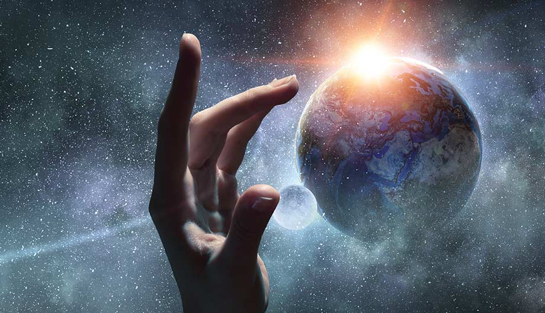
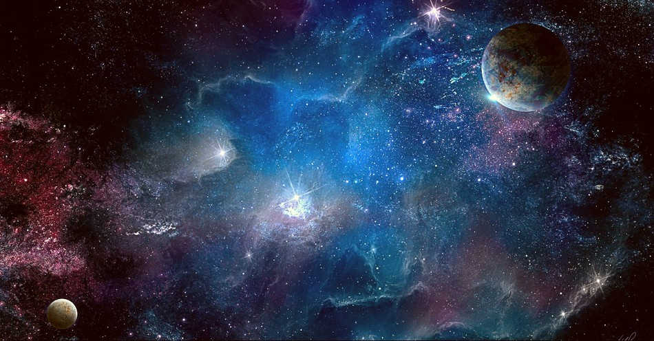
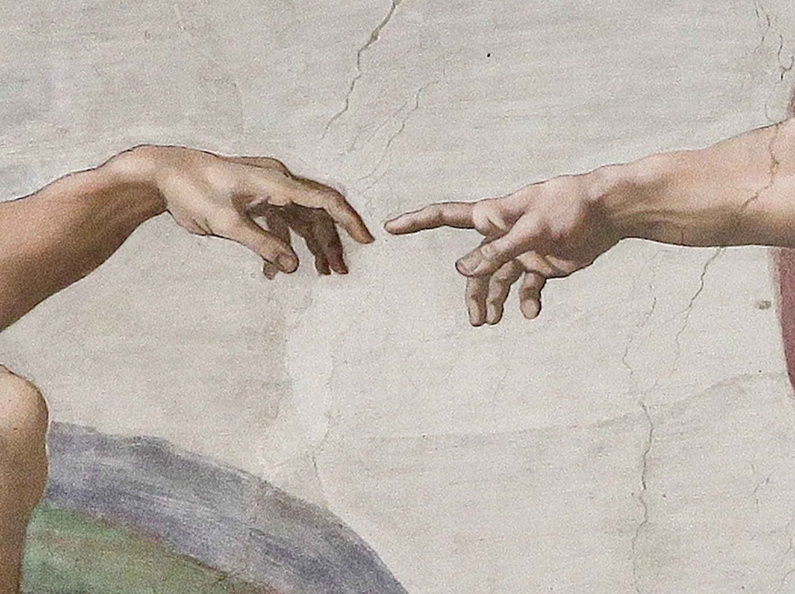

The Creation
Introduction
The idea of creation shows up in almost every culture and religion, and it usually tries to answer the same big questions: Where did we come from? Who made us? Why are we here? Even though the stories are different, they all give people a way to make sense of the world around them. When we look at how creation is described in ancient places like Egypt and Mesopotamia, in Greek and Roman myths, and in medieval religious texts—and even in LDS beliefs today—we can see how people across time have tried to understand their place in the universe.
Egypt & Mesopotamia
In ancient Egypt and Mesopotamia, creation was a big deal, especially because it explained not just the world, but also who was in charge. In the Mesopotamian Enuma Elish, everything starts with these two powerful beings, Apsu and Tiamat. It gets wild when Marduk steps in, defeats Tiamat, and literally makes the world out of her body. It’s brutal, but it shows how they saw the universe—chaotic at first, but then brought into order by the gods. Egypt had similar stories, like Atum or Ptah creating the world from the waters of chaos. These myths weren’t just for fun—they backed up the power of the kings and explained how everything needed to stay balanced. Their art and temple writing show how serious they were about the gods shaping the world and keeping it in order.
Greece & Rome
Greek and Roman myths tell creation stories in a different way, but they still start with chaos. In Theogony by Hesiod, it all begins with a void, then Earth (Gaia) shows up, and things keep unfolding from there with gods and Titans fighting for control. Zeus ends up in charge after defeating the older generation, which says a lot about how they saw power and family dynamics. The Romans used a lot of Greek ideas, but added their own twist—especially about how the gods supported the rise of Rome. These stories were less about perfect gods and more about dramatic, flawed beings who made the world while dealing with their own issues. It made creation feel messy but kind of relatable. Plus, they influenced a lot of what people thought about justice, power, and even art and politics back then.
The Medieval Period
In the medieval period, creation was mostly viewed through Christian or Islamic beliefs. In Christianity, the Book of Genesis says that God created the world in six days, starting with light and ending with humans. The belief that God created everything from nothing (creatio ex nihilo) really highlighted His power and perfection. This shaped how people in the Middle Ages thought about the world—everything had a purpose and was part of God’s plan. Islamic teachings are similar, with Allah creating everything and being all-powerful and merciful. Back then, creation wasn’t just a story—it was the starting point for philosophy, science, and how people understood their lives and their responsibilities.
The Church of Jesus Christ of Latter-day Saints Religious Reflection
In The Church of Jesus Christ of Latter-day Saints faith, creation is seen a little differently than most other traditional Christian views. Instead of creating everything from nothing, it’s more like God organized the world out of materials that already existed. Jesus Christ played a major role in this process. The Church of Jesus Christ of Latter-day Saints teachings say that humans are eternal and were created in God’s image, which gives people a special purpose. I think what stands out most is how our version of creation focuses on individual worth, agency, and progression.
Conclusion
Even though creation stories from different times and places might seem totally different, they all try to explain where we came from and what it all means. Whether it’s Marduk defeating a chaos monster, Zeus taking over the heavens, or God speaking the world into existence, these stories help people feel connected to something bigger. They reflect the values and beliefs of the cultures that told them, and they’ve shaped how we think about life, purpose, and even our responsibilities today. It’s kind of amazing how one thing, creation, can link so many people across time and space to still feel relevant now.